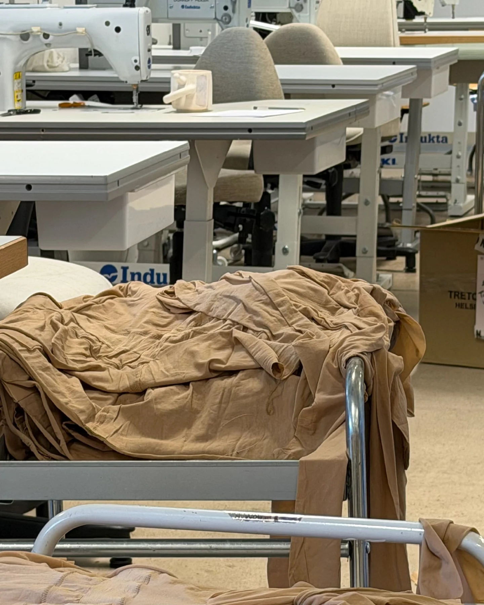

Индустрия · 3 мин чтения
За красивым кадром: кто и как выпускает колготки
Три разных масштаба бизнеса: семейное производство, группа брендов и компания с длинным архивом.
Продолжить с сохранённого места ↓
01
Gabriella: семейная история и производство
В разделе «О нас» Gabriella указывает 1996 год основания и описывает себя как семейную компанию. Производственная площадка находится в Лодзи, на улице Brukowa. На той же странице компания рассказывает о машинах, сотрудниках и объёмах выпуска. Такие числа полезны как собственная презентация предприятия, но не становятся независимым аудитом только потому, что опубликованы на официальном сайте.
Для читателя важнее понять цепочку: разработка модели, подбор нитей, вязание, отделка, проверка и упаковка. У разных изделий порядок и содержание операций могут различаться. В ТОНКО эта цепочка разобрана отдельно, а фото оборудования подписано по реальному источнику, без приписывания одной фабрики другому бренду.
02
Golden Lady и OMSA: марка не равна группе
Golden Lady Company объединяет несколько марок. Корпоративная страница Golden Lady описывает ассортимент колготок, чулок и других изделий, а также работу с крупной розницей и оптовыми каналами. Это один способ масштабировать доступность: покупатель встречает товар в разных торговых форматах, а не только в отдельном фирменном бутике.
OMSA входит в группу с 1992 года. Это дата перехода в состав Golden Lady, а не рождения самой марки. У брендов внутри одной группы могут сохраняться собственные названия, визуальные образы и позиции в ассортименте. Поэтому карточку марки и историю владельца полезно читать отдельно.
03
FALKE: преемственность через архив
Официальная хронология FALKE начинается 8 мая 1895 года с мастерской Франца Фальке-Роэна. В 1951 году управление перешло к Паулю и Францу-Отто; с 1990 года компания рассказывает о четвёртом поколении семьи. Архивные фотографии помогают увидеть людей за датами, но сами по себе не доказывают характеристики современных изделий.
Длинная история — это материал для изучения решений, а не автоматический знак превосходства. Важно различать преемственность, расширение ассортимента, технологические изменения и рекламный язык. Убедительная история компании связывает событие с источником и не превращает каждое десятилетие в легенду.
04
Что остаётся за кадром
Красивая съёмка — только одна часть работы. Есть размерный и цветовой запас, брак, возвраты, доставка, хранение и сезонность. Цена на полке не равна прибыли с пары. Если товар продаётся через посредников, условия цепочки добавляют ещё один уровень расчёта.
В разделе «Индустрия» можно изменить исходные числа в учебном расчёте и увидеть, как меняется остаток после переменных расходов. Это не оценка доходности Gabriella, FALKE или Golden Lady: для такого вывода нужны их реальные сопоставимые данные. Здесь расчёт помогает понять логику, а истории показывают разные способы организовать бизнес.
Проверить понимание
1992 год на корпоративной странице OMSA — это…
На чём основан материал
- Gabriella: история и производственная площадка ↗
- Golden Lady Company: марка Golden Lady ↗
- Golden Lady Company: марка OMSA ↗
- FALKE: поколения и хронология ↗
Источники просмотрены 15 ноября 2026. Советы по чтению фотографий и сравнению — редакционный разбор; характеристики конкретных изделий проверяйте в карточке производителя.
Продолжение разбора
От идеи — к реальным примерам.
Последнее дополнение:
От заявления к проверяемому факту
- Разделите сведения о конкретном изделии и описание компании в целом. Общий рассказ о производстве не подтверждает состав каждой пары.
- Уточните, к чему относится экологическое заявление: сырью, упаковке, энергии или программе сбора.
- Посмотрите, кто сообщает данные и за какой период. Слова бренда и независимая проверка имеют разный статус.
Что добавилось по теме
Подборка пополняется готовыми русскими обзорами. Оригинальные даты и источники сохранены внутри материалов.

Swedish Stockings
XV Production: как превратить колготки в новый предмет одежды
Шведская студия XV Production работает с уже существующими материалами и одеждой, создавая новые изделия. В совместном проекте со Swedish Stockings и Николь Уокер отправной точкой стали колготки бренда, из которых изготовили топ.
Прочитать обзор на ТОНКО →В мастерской XV Production. Фотография из интервью Swedish Stockings о повторном использовании колготок.

Swedish Stockings
Новый логотип и упаковка Swedish Stockings: что изменилось
Вместе с коллекцией AW26 Swedish Stockings представил обновлённое оформление. Изменения затронули логотип, упаковку и интернет-магазин — марка стремится показать колготки как полноценный предмет моды.
Прочитать обзор на ТОНКО →Новая упаковка Swedish Stockings с обновлённым оформлением. Официальная фотография из публикации о смене визуального образа бренда.

Swedish Stockings
Rave Rvw: как переработанные ткани встречаются с цветными колготками
В интервью Swedish Stockings основательницы стокгольмского Rave Rvw рассказывают о работе с повторно используемыми тканями. Josephine Bergqvist и Livia Schück связывают развитие марки с поиском выразительной, но пригодной для носки одежды.
Прочитать обзор на ТОНКО →Rave Review и сотрудничество со Swedish Stockings. Коллаж из интервью бренда о колготках и гольфах для коллекции.